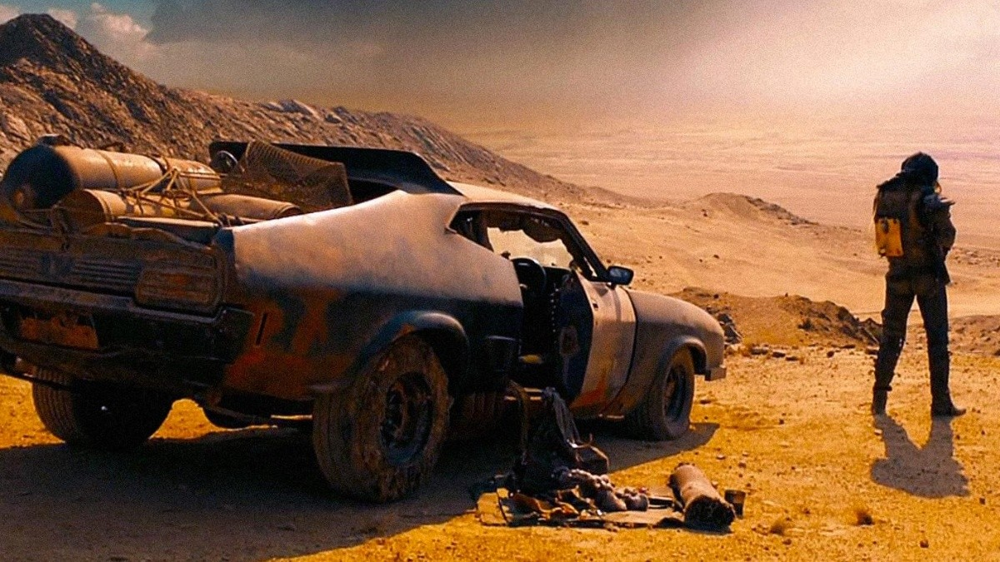

EL MUNDO IDEAL
Que es una utopia?
Una utopía es la representación de una idea o sociedad en su forma perfecta, ideal y sin
fallos, pero cuya realización se aleja de la realidad por su complejidad o imposibilidad de
llevarla a la práctica por diversos factores.

Porque la idea de una utopia es falsa
Cada persona es hecha conforme a sus condiciones materiales, es ridiculo pensar que nacemos
destinados o con un caracter desde recien nacidos,
tenemos vivencias y experiencias diferentes cada uno, de ahi que todos seamos diferenetes, esto
significa que mis gustos y lo que yo considero una utopia
para otro puede ser un sufrimiento, asi que no importan las buenas intenciones de todas estos
personajes que prometen que van a salvar el mundo con sus ideologias sumamente autoritarista,
puede que mejore para algunos pero estoy convencido que sera el infierno para otros.

Talvez estamos destinados a una distopia
Me parece interesante como avanza la tecnologia y la moda, tan solo hay que ver los autos de antes y
los de ahora, lo de hoy son autos blindados y espaciosos
antes habia un descapotable para salir con tu familia, no sera que existe un miedo intrinseco en el
diseño, yo pìenso que si. Tengo esperanza de que los bienes pasen a ser del pueblo
si una sola persona con riqueza decide el futuro nos espera la mediocridad, no creo que sea
casualidad que estemos en el momento historico mas productivo y con mas casos de ansiedad, y peor
aun mas casos de suicidios
espero que las personas tengan esperanza y que dejen su idea de que un mundo como el de "mad max" es
lo ideal.
